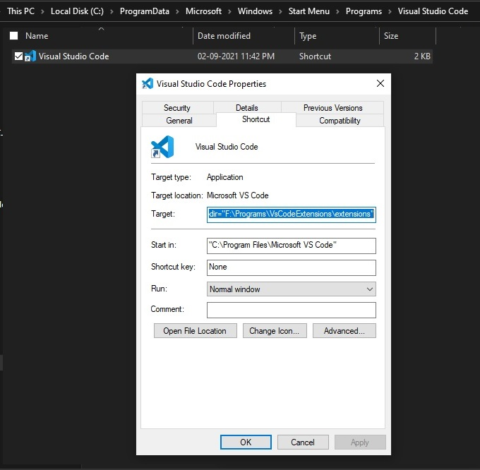

Custom Extension Path
-
Create an empty folder. For example,
F:\Programs\VsCodeExtensions\extensions
-
"C:\Program Files\Microsoft VS Code\Code.exe" --extensions-dir="F:\Programs\VsCodeExtensions\extensions"
- Update 'target' text box with following path
- 
Update Context menu for 'Open With...'
- Open Regedit as Administrator
- Navigate to Computer\HKEY_CLASSES_ROOT\directory\shell\VSCode\command
- Append --extensions-folder=[alternative path for extensions folder] the value (Default)
- Navigate to Computer\HKEY_CLASSES_ROOT\directory\background\shell\VSCode\command
- Append --extensions-folder=[alternative path for extensions folder] the value (Default)